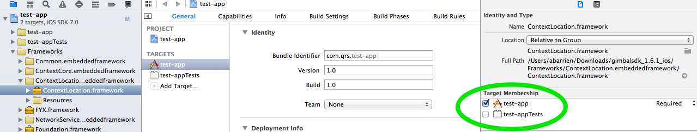

Get Gimbal up and running in your iOS App.
If this is your first time working with the Proximity Framework visit the Proximity Overview »
The following steps will set up an application in Xcode ready for enabling Gimbal features.
Make sure you are:
In Xcode choose File > New > Project and create a new Application
Having trouble adding these to your project? Here's some help
Important Right click the Frameworks folder and choose the "Add files to ..." option to add these frameworks.
It is strongly recommended to add the Gimbal Frameworks using this method to ensure that the Target Membership checkbox is enabled properly. If an alternate method is used, then the Target Membership of the frameworks must be verified and checked.
Note You will find these frameworks in the
Frameworks folder inside the Gimbal SDK zip file.
Your frameworks directory should now look like this:

For each Gimbal Framework, verify the Target Membership checkbox is set:
Verify your deployment target matches the iOS version of your device:

The following steps will allow you to use Gimbal Proximity features in your application.
Create Your Proximity API Key in the Gimbal Manager.
You will be presented with a form where you provide an app name and callback URL.
Important The callback URL must be in the
iOS URL scheme
format yourUrlScheme://authcode.
Next, set the visibility to Private and mark the box Allow anonymous users of
this App to detect your beacons.
Hit the 'Generate' button. Once finished, your app will have a generated App ID and App Secret.
Important You'll need your App ID, App Secret, and Callback URL to build and run your iOS app.
For example if you registered test-app://authcode as your Callback URL, you would add
test-app as your application URL Scheme. It should look like this.
Note For further information on Implementing Custom URL Schemes, please consult the Apple Documentation.
Add this code to the top of your AppDelegate implementation (.m) file.
#import <FYX/FYX.h>
Add this code to your didFinishLaunchingWithOptions: method, inserting your specific App
ID, App Secret, and Callback URL.
[FYX setAppId:@"your-app-id" appSecret:@"your-app-secret" callbackUrl:@"your://app-url"];
Important The values you use for App ID, App Secret, and Callback URL should match the values from the Proximity API Key you created in the Developer Portal.
This call registers the application with the server and starts bluetooth scanning.
#import <FYX/FYX.h>
...
[FYX startService:self];
Note You must add the
<FYXServiceDelegate> protocol to your class.
Once the service start has been attempted by calling startService
above, one of the following methods will be invoked on your delegate object once the status of the service
has been determined.
Important The SDK will not function properly until the service has successfully started. If you attempt further calls into the SDK before receiving a callback indicating the service has successfully started, they will be rejected by the server.
#import <FYX/FYX.h>
...
- (void)serviceStarted
{
// this will be invoked if the service has successfully started
// bluetooth scanning will be started at this point.
NSLog(@"FYX Service Successfully Started");
}
#import <FYX/FYX.h>
...
- (void)startServiceFailed:(NSError *)error
{
// this will be called if the service has failed to start
NSLog(@"%@", error);
}
This call creates a FYXSightingManager object and will trigger the callback to
your
delegate of
sightings using the default scanning options. Using this call you will be notified of
sightings
for
proximity devices your application is authorized for.
#import <FYX/FYXSightingManager.h>
...
@property (nonatomic) FYXSightingManager *sightingManager;
...
self.sightingManager = [FYXSightingManager new];
self.sightingManager.delegate = self;
[self.sightingManager scan];
At this point the SDK will be scanning for Bluetooth transmission. In order for your app to received sightings, implement the following.
To receive sightings you must add the <FYXSightingDelegate> protocol
to your class and set the delegate on your FYXSightingManager object.
#import <FYX/FYXSightingManager.h>
#import <FYX/FYXTransmitter.h>
...
- (void)didReceiveSighting:(FYXTransmitter *)transmitter time:(NSDate *)time RSSI:(NSNumber *)RSSI
{
// this will be invoked when an authorized transmitter is sighted
NSLog(@"I received a FYX sighting!!! %@", transmitter.name);
}
Activation tells Gimbal to associate the Beacon with your account.
Note You'll need to open the Beacon to find the ID.

Once Gimbal Proximity detects the beacon you activated in the Gimbal Manager you will see a log entry that looks like this.
2013-03-28 11:17:58.947 myproduct[11532:907] I received a FYX sighting!!! MyBeacon
For additional details on how to leverage the SDK functionality, refer to the sample applications and documentation included in the zip file provided.